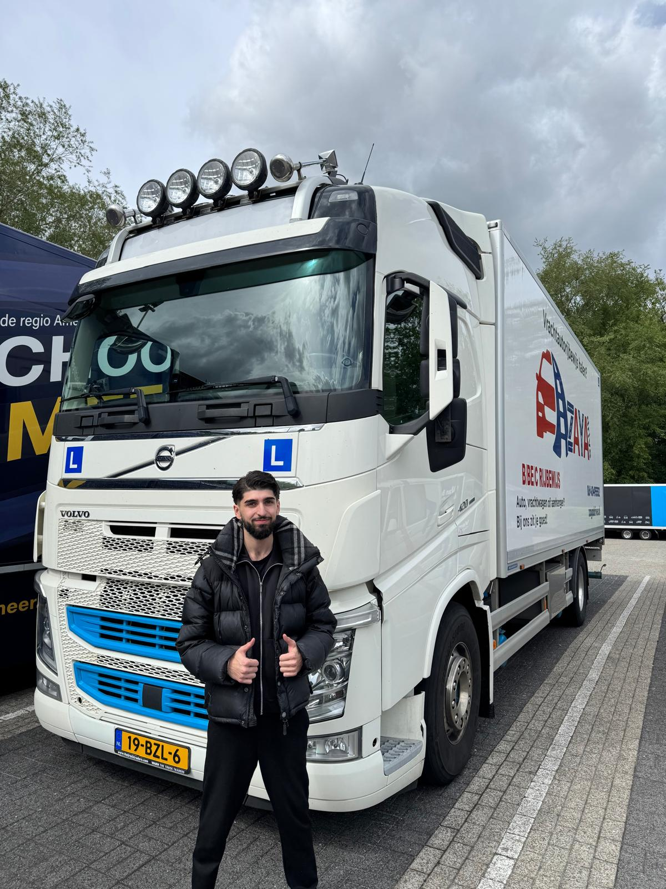

— WIE BEN IK

Als student Software Development word ik gedreven door het oplossen van complexe problemen en het bouwen van visueel sterke en efficiënte toepassingen. Ik focus me momenteel op het leggen van een ijzersterke basis in webtalenten, waarna ik snel zal uitbreiden naar backend logica en moderne frameworks.
MBO Software Development (Niveau 4)
Lopend — Leerjaar 1
Webtechnologieën, UI/UX Design, Gaming, Systeembeheer
Mijn doel is om uit te groeien tot een veelzijdige Full-Stack Developer. Ik wil niet alleen functionele code schrijven, maar ook systemen ontwerpen die schaalbaar zijn en een uitstekende gebruikerservaring bieden.